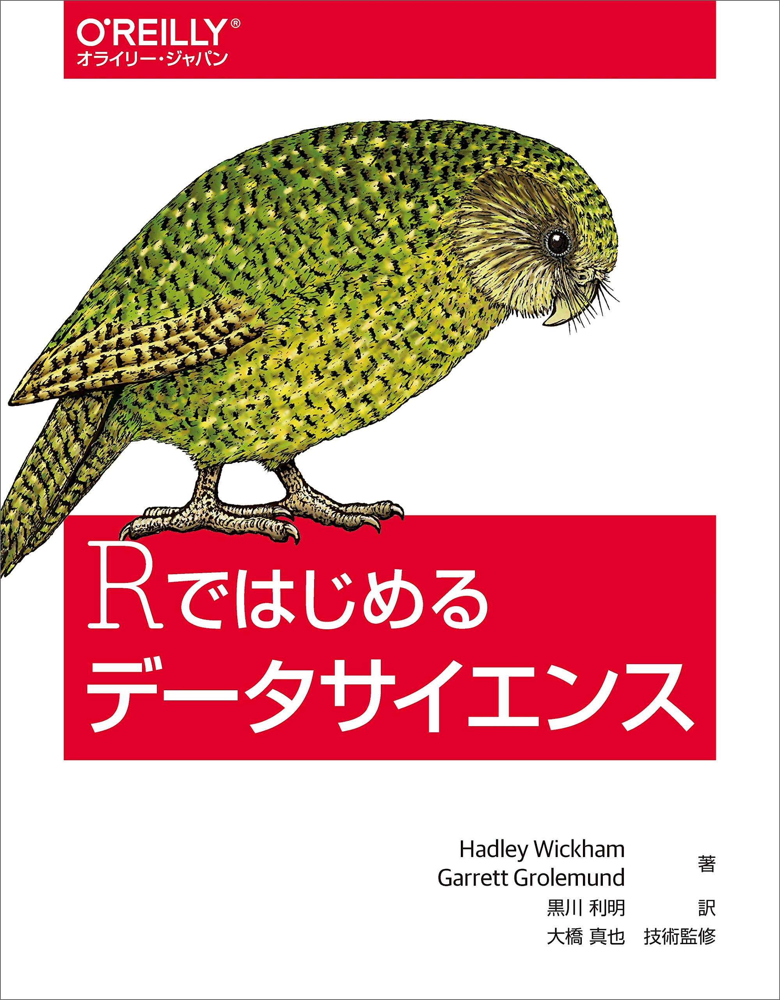

情報処理応用演習
概要
- 講義名：情報処理応用演習
- 講義日: 2023年10月7・14・28日
- 場所: 1号館2階・情報処理室
- 講義内容: Rの使い方
- Rの基本的な操作 & Quarto
- データの入出力
- データのハンドリング（前処理）
- データの可視化
- 統計学、確率、多変量解析、因果推論の授業ではないことに注意
- 到達目標: Rを用いたデータ分析の教科書が読める土台づくり
担当教員
- 氏名：宋財泫（そん じぇひょん; SONG JAEHYUN）
- ホームページ：https://www.jaysong.net
- メール: songkansai-u.ac.jp
講義内容
| 回 | 内容 | 教科書 |
|---|---|---|
| 1 | ガイダンス & RとIDEの導入 | |
| 2 | Rの基本的な操作 & Quarto入門 | 第6・22・24章 |
| 3 | データハンドリング（1） | 第12・14章 |
| 4 | データハンドリング（2） | 第13・14章 |
| 5 | データハンドリング（3） | 第15章 |
| 6 | 可視化（1） | 第17章 |
| 7 | 可視化（2） | 第18・19章 |
| 8 | 可視化（3） | 第18・19章 |
前提知識
- ファイル・システムの理解
- フォルダー (ディレクトリ)の概念
C:/AAA/BBB/CCC.txt(Windows)や~/AAA/BBB/CCC.text(macOS / Linux)の意味が理解できること- 相対パス / 絶対パスの概念が理解できること
- 不安がある場合は本サポートページの「ファイル・システム」を参照すること。
- ブラインド・タッチ (重要)
- タイピングが遅いと、実習で非常に苦労する。
- 第4回の授業までにブラインドタッチの練習を推奨
- グーグルで「タイピング練習」で検索すれば様々な情報が得られる。一日30分以上、2週間程度である程度出来るようになり、それ以降は意識しなくても上達していく。
- この授業に限らず、現代社会で極めて重要なスキル
教科書
Song Jaehyun・矢内勇生.『私たちのR: ベストプラクティスの探求』Web-book
- https://www.jaysong.net/RBook
- 本講義内容を200%カバーする
- 無料

参考書
- 松村優哉 他. 2021. 『改訂2版 RユーザのためのRStudio[実践]入門』技術評論社
- Garrett Grolemund and Hadley Wickham. 2017. R for Data Science. O’Reilly.
- 邦訳『Rではじめるデータサイエンス』(原著は無料: https://r4ds.had.co.nz/)
- Jared P. Lander. 2018. R for Everyone. Addison-Wesley Professional.
- 邦訳『みんなのR』



成績評価
- 平常点: 30%
- 課題: 70%